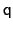

Next: Linear and polynomial combinations
Up: Collective variable components (basis
Previous: List of available colvar
Contents
Index
Subsections
The following components returns
real numbers that lie in a periodic interval:
- dihedral: torsional angle between four groups;
- spinAngle: angle of rotation around a predefined axis
in the best-fit from a set of reference coordinates.
In certain conditions, distanceZ can also be periodic, namely
when periodic boundary conditions (PBCs) are defined in the simulation
and distanceZ's axis is parallel to a unit cell vector.
The following keywords can be used within periodic components (and are
illegal elsewhere):
Internally, all differences between two values of a periodic colvar
follow the minimum image convention: they are calculated based on
the two periodic images that are closest to each other.
Note: linear or polynomial combinations of periodic components
may become meaningless when components cross the periodic boundary.
Use such combinations carefully: estimate the range of possible values
of each component in a given simulation, and make use of
wrapAround to limit this problem whenever possible.
When one of the following components are used, the defined colvar returns a value that is not a scalar number:
- distanceVec: 3-dimensional vector of the distance
between two groups;
- distanceDir: 3-dimensional unit vector of the distance
between two groups;
- orientation: 4-dimensional unit quaternion representing
the best-fit rotation from a set of reference coordinates.
The distance between two 3-dimensional unit vectors is computed as the
angle between them. The distance between two quaternions is computed
as the angle between the two 4-dimensional unit vectors: because the
orientation represented by

is the same as the one
represented by
, distances between two quaternions are
computed considering the closest of the two symmetric images.
Non-scalar components carry the following restrictions:
- Calculation of system forces (outputSystemForce option)
is currently not implemented.
- Each colvar can only contain one non-scalar component.
- Binning on a grid (abf, histogram and
metadynamics with useGrids enabled) is currently
not implemented for colvars based on such components.
Note: while these restrictions apply to individual colvars based
on non-scalar components, no limit is set to the number of scalar
colvars. To compute multi-dimensional histograms and PMFs, use sets
of scalar colvars of arbitrary size.
In addition to the restrictions due to the type of value computed (scalar or non-scalar),
a final restriction can arise when calculating system force
(outputSystemForce option or application of a abf
bias). System forces are available currently only for the following
components: distance, distanceZ,
distanceXY, angle, dihedral, rmsd,
eigenvector and gyration.
Next: Linear and polynomial combinations
Up: Collective variable components (basis
Previous: List of available colvar
Contents
Index
vmd@ks.uiuc.edu